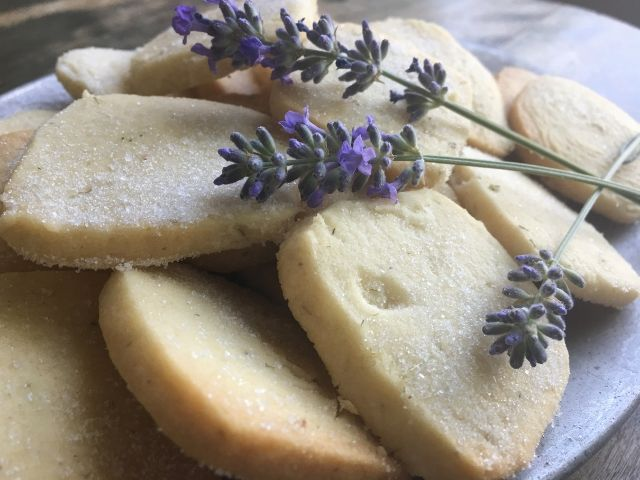

Lavender Shortbread Recipe

Lavender shortbread is a fragrant and buttery treat that combines the delicate floral notes of lavender with the richness of traditional shortbread. This simple yet elegant biscuit is perfect for tea time or as a special gift for loved ones.
With just a few ingredients and a quick preparation time, these shortbread cookies are easy to make and offer a unique twist on the classic recipe. The lavender adds a soothing aroma and flavor, making them a delightful addition to any dessert table.
Ingredients
- 200g unsalted butter (softened)
- 100g caster sugar
- 1 tsp dried lavender buds (finely chopped)
- 300g plain flour
- 1/4 tsp salt
- 1 tsp vanilla extract (optional)
Instructions
- Prepare the butter: Preheat your oven to 170°C (340°F) and line a baking tray with parchment paper. In a large bowl, cream the softened butter and caster sugar together until light and fluffy.
- Add lavender: Stir in the finely chopped lavender buds and vanilla extract (if using). Mix well to evenly distribute the lavender.
- Combine the dry ingredients: In a separate bowl, whisk together the plain flour and salt. Gradually add this to the butter mixture, mixing until just combined. The dough should be soft but not sticky.
- Shape the dough: Turn the dough out onto a lightly floured surface and gently roll it into a ball. Flatten the dough to about 1/4-inch thickness and use a cookie cutter or knife to shape the shortbread into rounds or squares.
- Bake the shortbread: Place the shortbread on the prepared baking tray and bake for 12-15 minutes, or until the edges are golden brown. Keep an eye on them to avoid over-baking.
- Cool and serve: Allow the shortbread to cool on the tray for a few minutes before transferring to a wire rack to cool completely. Enjoy with tea or as a sweet treat!